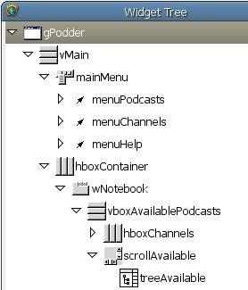

This document explains how to develop applications for the maemo platform using the Python programming language. To use the document, you must have a basic knowledge of Python and PyGTK (advanced knowledge is not required, but you must be able to write simple GTK programs in Python).
Before you start to write your own Python applications for maemo, perform the following tasks:
For more information, see the Overview of the maemo platform section in Maemo 2.1 tutorial 1.
The maemo development environment is where you run your maemo applications. For more information, see the Setting up and testing development environment section in Maemo 2.1 tutorial1. The tutorial assumes that you are developing from Scratchbox instead of directly using a maemo device (such as a Nokia 770).
As handheld devices have limited resources (when compared to desktop or notebook computers), several modules have been removed from maemo's Python in order to reduce its footprint.
The following modules have been removed:
test, ctypes/test, sqlite3/test, email/test, _ctypes_test.so, _testcapi.so, linuxaudiodev.so, ossaudiodev.so, audioop.so, lib-tk, bsddb, idlelib.
The following modules have been removed but are supplied by other modules:
pyexpat.so, xmldom, xmlsax, xmlparsers.
The following modules are deprecated:
dbhash, curses, posixfile, getpass, macpath, macurl2path, os2emxpath, nturl2path, pty, pyclbr, rexec, rlcompleter, statvfs, stringold, telnetlib, this, toaiff, tty, user, xdrlib, aifc, audiodev, sunaudio and sunau.
The following modules are only available in the SDK:
distutils, pdb, pydoc, BaseHTTPServer, SimpleHTTPServer, SimpleXMLRPCServer, CGIHTTPServer, cgi, cgitb, DocXMLRPCServeri, robotparser, smtpd, compile, encodings.cp*, encodings.mac*, doctest, unittest, config, symtable, tabnanny, timeit, trace and hotshot.
The import command will import .pyo files even if the interpreted is called without the -O or -OO option. This is a difference from the standard Python behavior.
To get started with Python, use the following sections to write a simple GTK+ application which creates and shows a window with a "Hello World!" text. The application does not even quit when the window is closed.
Create a hello_world_1.py file with the following content.
#!/usr/bin/env python2.5
import gtk
if __name__ == "__main__":
window = gtk.Window(gtk.WINDOW_TOPLEVEL)
label = gtk.Label("Hello World!")
window.add(label)
label.show()
window.show()
gtk.main()
In the Scratchbox console, first make the file executable by running the chmode +x ./hello_world_1.py command, and then run the file with the run-standalone.sh ./hello_world_1.py command. Figure 1 illustrates the results of the run command:
Figure 1. Plain PyGTK "Hello World!" application
You can see that the plain PyGTK code already "works" on maemo. However, do not use plain PyGTK code or rely on the assumption that any PyGTK code "works" on maemo. In this tiny example program, the obvious sign of misfit in the maemo environment is that its borders (skin graphic area) are broken (look at the top corners).
The reason for using the run-standalone.sh command to execute the application is that it adds the Hildon theming. Figure 2 illustrates how the application looks if run without the run-standalone.sh command:
Figure 2. Application without the Hildon theme
The HildonWindow class overloads the GtkWindow class, providing the Hildon theme (look and feel) for the top level windows. In order to use the facilities provided by the Hildon framework (and to integrate cleanly in it), the application must use a HildonWindow instead of a GtkWindow. With a HildonWindow class, the application has, for example, access to the Hildon menus and toolbars.
The requires code change is simple: replace the GtkWindow with the HildonWindow, and import the hildon module. The following example illustrates the required changes.
#!/usr/bin/env python2.5
import gtk
import hildon
if __name__ == "__main__":
window = hildon.Window()
window.connect("destroy", gtk.main_quit)
label = gtk.Label("Hello World!")
window.add(label)
label.show()
window.show()
gtk.main()
Figure 3. Hildon-compliant "Hello World!" application
Note how the borders are now drawn in the right way, since the program is using the HildonWindow class.
The HildonProgram class is a programmer commodity used to apply program-wide settings to all Hildon windows used by the application (for example, this allows you to have a common menu and toolbar in all windows). In addition, the HildonProgram also manages other program-wide issues, such as hibernating.
The example "Hello World" application has no use for a HildonProgram object, but it is added to the following example, simply to illustrate how a regular Hildon application is structured.
#!/usr/bin/env python2.5
import gtk
import hildon
class HelloWorldApp(hildon.Program):
def __init__(self):
hildon.Program.__init__(self)
self.window = hildon.Window()
self.window.connect("destroy", gtk.main_quit)
self.add_window(self.window)
label = gtk.Label("Hello World!")
self.window.add(label)
label.show()
def run(self):
self.window.show_all()
gtk.main()
if __name__ == "__main__":
app = HelloWorldApp()
app.run()
When running the application, the result is the same as shown in Figure 3.
This section describes the issues involved in porting an existing PyGTK application to maemo. The porting of a real application is illustrated with step-by-step instructions.
The example application is gPodder (version 0.6). It was chosen because, it is reasonably simple, has a small, uncluttered interface and contains most of the important issues involved in porting PyGTK applications to maemo.
Most of the porting effort is spent making an application use and obey the Hildon UI style (such as making use of hardware keys and Hildon-specific widgets). As a result, make sure that you are familiar with the Hildon UI style before you start porting. For more information, see Hildon User Interface Style Guide2.
To install and run gPodder:
The Scratchbox console can display some GLib warnings, but you can ignore them. Figure 4 illustrates the screen you see after running the commands:
Figure 4. gPodder running on maemo without any modifications
This means that gPodder 0.6 works on maemo without any modifications. However, it is not a maemo application yet, and the steps in the following sections are required to make it fit cleanly in the Maemo environment.
This section gives a brief overview of gPodder's source code. The purpose of the overview is to make it easier to understand the code changes implemented in the following sections.
Most of the code changes are made in the gpodder-0.8/src/gpodder/gpodder.py file. It contains the following classes:
class Gpodder(SimpleGladeApp) class Gpodderstatus(SimpleGladeApp): class Gpodderchannel(SimpleGladeApp): class Gpodderproperties(SimpleGladeApp): class Gpodderepisode(SimpleGladeApp):
There is one class for each GtkWindow defined in the gpodder-0.8/data/gpodder.glade file, as shown in Figure 5:
Figure 5. Windows defined in gPodder's glade file
In addition to loading the window description from gpodder.glade, the SimpleGladeApp class also makes all window elements directly accessible from self, ignoring the element's hierarchy. Figure 6 illustrates a part of the element's hierarchy for the gPodder window, and how to access the elements from inside a Gpodder method.
|

Figure 6. Widget tree for the gPodder window |
self.vMain
self.mainMenu
self.menuPodcasts
self.menuChannels
self.menuHelp
self.hboxContainer
self.wNotebook
self.vboxAvailablePodcasts
self.hboxChannels
self.scrollAbailable
self.treeAvailable
|
The first code change in the porting exercise is to make gPodder use HildonProgram and HildonWindow classes instead of the GtkWindow class.
Start by modifying the gpodder.py file (in the gpodder-0.8/src/gpodder directory). Since you want to use Hildon elements, you have to import its module. The following example illustrates the import:
61 |from libipodsync import gPodder_iPodSync 62 |from libipodsync limport ipod_supported 63 | ++ |import hildon ++ | 64 |# for isDebugging: 65 |app_name = "gpodder" 66 |app_version = "unknown" # will be set in main() call
Second, add a HildonProgram (self.app) and a HildonWindow (self.window). The following example illustrates the added objects:
112 | def new(self): 113 | if libgpodder.isDebugging(): 114 | print "A new %s has been created" % self.__class__.__name__ ++ | ++ | self.app = hildon.Program() ++ | ++ | self.window = hildon.Window() ++ | self.window.set_title(self.gPodder.get_title()) ++ | self.app.add_window(self.window) ++ | ++ | self.vMain.reparent(self.window) ++ | self.gPodder.destroy() ++ | ++ | self.window.show_all() ++ |
The gPodder class (self) has its close_gpodder method connected to the destroy signal from the original gPodder Gtk window. This means that you have to remove the connection from gPodder and put it in the new Hildonwindow (self.window).
To remove the signal connection from the original gPodder Gtk window, open the gpodder.glade file (in the gpodder-0.8/data directory) and remove the connection, as shown in Figure 7.
Figure 7. destroy signal for gPodder window
The following example illustrates how you connect Gpodder.close_gpodder to the new HildonProgram (self.app):
| self.window = hildon.Window()
| self.window.set_title(self.gPodder.get_title())
++ | self.window.connect("destroy", self.close_gpodder)
| self.app.add_window(self.window)
|
| self.vMain.reparent(self.window)
The change from GtkWindow to HildonProgram/HildonWindow is now complete. Figure 8 illustrates the results if you run gPodder again.
Figure 8. gPodder using HildonProgram and HildonWindow
Note that the window fits in the screen without any broken borders, just as the "Hello World" application did.
This section describes how you make gPodder use Hildon's title area as its menu bar, instead of using its own GTK+ menu (a GTKMenuBar object).
In the gpodder.glade file, you can see that the gPodder window has a menu bar (a GTKMenuBar object) called mainMenu. You must move all its children (menuPodcasts, menuChannels and menuHelp) to the HildonWindow's menu and then destroy the empty mainMenu menu.
To achieve this, add the following lines to the gpodder.py file:
| self.vMain.reparent(self.window)
| self.gPodder.destroy()
++ |
++ | menu = gtk.Menu()
++ | for child in self.mainMenu.get_children():
++ | child.reparent(menu)
++ | self.window.set_menu(menu)
++ |
++ | self.mainMenu.destroy()
|
| self.window.show_all()
Figure 9 illustrates the resulting menu:
Figure 9. gPodder using HildonWindow's menu bar
Hildon has a set of widgets for common operations, such as a color selection dialog, file chooser dialog and a time picker. Most of them provide the same functionality (or extension) as the existing GTK+ widgets. For example, HildonFileChooserDialog has the same purpose as GtkFileChooserDialog.
Replace the GTK+ widgets with the Hildon ones whenever possible, since the Hildon widgets were designed to obey maemo's restrictions and peculiarities.
gPodder uses a GTK+ file chooser dialog when the users export their channel lists. Make it use a HildonFileChooserDialog instead. The following example illustrates the code changes needed in the python.py file:
561 -- | dlg = gtk.FileChooserDialog( title="Export to OPML...", parent = None, action = gtk.FILE_CHOOSER_ACTION_SAVE)
562 -- | dlg.add_button( gtk.STOCK_CANCEL, gtk.RESPONSE_CANCEL)
563 -- | dlg.add_button( gtk.STOCK_SAVE, gtk.RESPONSE_OK)
++ | dlg = hildon.FileChooserDialog(self.window, gtk.FILE_CHOOSER_ACTION_SAVE);
++ |
564 | response = dlg.run()
565 | if response == gtk.RESPONSE_OK:
Figure 10 illustrates the results when you select Menu > Channels > Export List:
Figure 10. gPodder using Hildon's file chooser dialog
The following changes to the interface layout are necessary to make the interface fit into the relatively small maemo screen:
Make the tab names shorter. Replace Downloaded Podcasts with Downloaded to make the tab names stay within screen boundaries.
In the gPodderChannel, increase the Default Width to 700 and Default Height to 350. In the gPodderChannel->[...]->table1->scrolledWindow3, change the V Policy and H Policy to Automatic.
The maemo applications must use the available hardware keys to improve their usability. All applications do not have use for all hardware keys, of course, but try nonetheless to use those keys that make sense in the application.
The Full screen hardware key is particularly useful, since the screen size is one of the key issues in maemo applications, especially in the desktop applications that are being ported to maemo (such as gPodder).
To implement the full screen functionality, you have to monitor two more window signals:
The following example illustrates how these two signals are connected (in the gpodder.py file):
| self.window.set_title(self.gPodder.get_title())
| self.window.connect("destroy", self.close_gpodder)
++ | self.window.connect("key-press-event", self.on_key_press)
++ | self.window.connect("window-state-event", self.on_window_state_change)
++ | self.window_in_fullscreen = False #The window isn't in full screen mode initially.
| self.app.add_window(self.window)
|
| self.vMain.reparent(self.window)
The following example illustrates the window state monitoring implementation on_window_state_change:
551 | self.showMessage( _("Could not delete channel.\nProbably no channel is selected."))
552 | #-- Gpodder.on_itemRemoveChannel_activate }
++ |
++ | def on_window_state_change(self, widget, event, *args):
++ | if event.new_window_state & gtk.gdk.WINDOW_STATE_FULLSCREEN:
++ | self.window_in_fullscreen = True
++ | else:
++ | self.window_in_fullscreen = False
++ |
554 | #-- Gpodder.on_itemExportChannels_activate {
555 | def on_itemExportChannels_activate(self, widget, *args):
The following example illustrates the hardware key monitoring implementation ( on_key_press):
| else:
| self.window_in_fullscreen = False
++ |
++ | def on_key_press(self, widget, event, *args):
++ | if event.keyval == gtk.keysyms.F6:
++ | # The "Full screen" hardware key has been pressed
++ | if self.window_in_fullscreen:
++ | self.window.unfullscreen ()
++ | else:
++ | self.window.fullscreen ()
|
554 | #-- Gpodder.on_itemExportChannels_activate {
555 | def on_itemExportChannels_activate(self, widget, *args):
Figure 11 illustrates gPodder in the full screen mode.
Figure 11. gPodder in the full screen mode
LibOSSO is the basic library containing required and helpful functions for maemo applications. One of LibOSSO's main features is RPC (Remote Procedure Calls) services (as it "wraps" D-BUS 3). In addition, LibOSSO provides access to low-level hardware functions, such as turning on (or keeping on) the display, autosaving, state saving and system time.
All maemo-compliant applications must use LibOSSO to respond coherently to system changes and signals, such as the battery low, pre-shutdown and state saving signals.
This section describes how remote procedure calls are implemented using LibOSSO. The example is divided in two different sample applications: osso_test_sender.py and osso_test_receiver.py.
The sender sample application sends an RPC message when a button is clicked. D-BUS interprets the message and sends the RPC to the receiver sample application, which displays a system notification stating that it has received the RPC.
The sender is simply a button occupying the whole window. When you click it, an RPC is sent to the receiver sample application.
Create a osso_test_sender.py file with the following content.
#!/usr/bin/python2.5
import osso
import hildon
import gtk
def send_rpc(widget, osso_c):
osso_rpc = osso.Rpc(osso_c)
osso_rpc.rpc_run("spam.eggs.osso_test_receiver",
"/spam/eggs/osso_test_receiver",
"spam.eggs.osso_test_receiver", "do_something")
print "RPC sent"
osso_c = osso.Context("osso_test_sender", "0.0.1", False)
window = hildon.Window()
window.connect("destroy", gtk.main_quit)
send_button = gtk.Button("Send RPC")
window.add(send_button)
send_button.connect("clicked", send_rpc, osso_c)
window.show_all()
gtk.main()
The receiver is an application that has no GUI (no window), it runs unseen in the background waiting for an RPC. When it receives one, it uses LibOSSO to display an information banner notifying the user that an RPC has been received.
Create a osso_test_receiver.py file with the following content.
#!/usr/bin/python2.5
import osso
import gtk
def callback_func(interface, method, arguments, user_data):
print "RPC received"
osso_c = user_data
osso_sysnote = osso.SystemNote(osso_c)
osso_sysnote.system_note_infoprint("osso_test_receiver: Received a RPC to %s." % method)
osso_c = osso.Context("osso_test_receiver", "0.0.1", False)
print "osso_test_receiver started"
osso_rpc = osso.Rpc(osso_c)
osso_rpc.set_rpc_callback("spam.eggs.osso_test_receiver",
"/spam/eggs/osso_test_receiver",
"spam.eggs.osso_test_receiver", callback_func, osso_c)
gtk.main()
The receiver also must register itself as a D-BUS service. Create a osso_test_receiver.service file with the following content.
[D-BUS Service]
Name=spam.eggs.osso_test_receiver
Exec={SOME_DIRECTORY_HIERARCHY}/osso_test_receiver.py
Replace {SOME_DIRECTORY_HIERARCHY} with the directory where osso_test_receiver.py is located.
Add the osso_test_receiver.service file to /usr/share/dbus-1/services.
First make sure that D-BUS recognises the new D-BUS service ( spam.eggs.osso_test_receiver). To do this, restart your maemo environment by using the following command on the Scratchbox console:
[sbox-TARGET_NAME: ~] > af-sb-init.sh restart
Then run osso_test_sender.py with the following command (assuming that it is in your home directory):
[sbox-TARGET_NAME: ~] > run-standalone.sh ./osso_test_sender.py
Figure 12 illustrates what now happens every time you click the Send RPC button.
Figure 12. LibOSSO sample application
Note that you do not have to manually run osso_test_receiver.py, as D-BUS does it automatically. Due to its extreme simplicity, the once instantiated osso_test_receiver.py continues running in background until you manually kill it from the Scratchbox console.
To distribute applications, you must put it in a neat single file (such as a regular Debian package) so that the application installer can recognise and install it, put all files to their correct locations and create an entry for the application in the menu.
As maemo devices are not delivered with Python by default, the maemo Python runtime package must also be installed. You can download it from http://www.maemo.org.
This section describes the process of creating a maemo package by showing how to package a simple "hello world" style application. Create a hello-pymaemo file (without the ".py" suffix) with the following content.
#!/usr/bin/env python2.5
import gtk
import hildon
import osso
osso_c = osso.Context("hello_pymaemo", "1.0.0", False)
window = hildon.Window ()
window.set_title ("Hello maemo!")
window.connect("destroy", gtk.main_quit)
button = gtk.Button ("Hello Python for Maemo!")
window.add (button)
window.show_all ()
gtk.main ()
Make the file executable by running the chmod +x hello-pymaemo command. This ensures that you can run the script in the same way as a regular binary application.
You must have an icon for the application. The icon is shown in the menu entry and in the task navigator bar. The icon must be a 26x26 pixels PNG image with a transparent background, such as the example icon shown in Figure 13:
Figure 13. Hello PyMaemo icon
Name the icon hello_icon_26x26.png.
The menu entry is a .desktop file with the following content for the application:
[Desktop Entry] Version=1.0.0 Encoding=UTF-8 Name=Hello PyMaemo! Exec=/usr/bin/hello-pymaemo Icon=hello_icon_26x26 Type=Application X-Osso-Service=hello_pymaemo X-Osso-Type=application/x-executable
Table 1. .desktop file fields
| Field name | Description |
|---|---|
| Version | Application version |
| Encoding | Character encoding. Must always be UTF8. |
| Name | Application's name |
| Exec | File to be executed when the application is called |
| Icon | Application's icon. Only the name of the file without its suffix (.png). |
| Type | "Application"since it is an entry for an application |
| X-Osso-Service | Name of the osso service that calls this application. For more information, see the paragraphs below the table. |
| X-Osso-Type | Usually "application/x-executable" |
As you can see in the desktop file, the application also needs an osso (D-BUS) service. Otherwise, it does not appear in the task navigation bar. For the service, create a hello_pymaemo.service file with the following content.
[D-BUS Service] Name=com.nokia.hello_pymaemo Exec=/usr/bin/hello-pymaemo
Note that since "-" is not a valid character in a service name., hello_pymaemo is used instead of hello-pymaemo.
Use Python Distribution Utilities ("Distutils") to copy the files to their proper locations. Create a setup.py file with the following content.
from distutils.core import setup
setup(name='hello-pymaemo',
version='1.0.0',
scripts=['hello-pymaemo'],
data_files = [
('share/pixmaps', ['hello_icon_26x26.png']),
('share/applications/hildon', ['hello-pymaemo.desktop']),
('share/dbus-1/services', ['hello_pymaemo.service']),
]
)
In the Scratchbox console, issue the python2.5 setup.py install command to achieve the following result:
After you have run the command, the application is actually installed in your system (in Scratchbox, you have to ru the af-sb-init.sh restart command before calling your application from the menu). You can access it from the Extras menu.
The problem with this approach is that if you want to remove the application, you have to manually delete every file from its corresponding directory, which is not practical. It is also not practical to distribute an application this way, since every user has to manually run the command (or a script that does it).
Instead, you can let the Application Installer take care of all these issues. To do that, you have to group all the files in a Debian package.
For more information about Python Distribution Utilities, see Distributing Python Modules4. To get a basic knowledge of Distutils, reading Chapters 1 and 2 is strongly recommended.
When creating a Debian package, the first step is to put all the files (the hello-pymaemo script, and the png, desktop and service files) in an empty directory called hello-pymaemo-1.0.0. The directory name must follow the <package-name>-<app-version> convention. This means that the package that you are creating for the hello world application is called hello-pymaemo.
As Debian packages use makefiles (Makefile) instead of Python Distutils (setup.py), you have to write a Makefile to act as an interface between the Debian package system and the setup.py. The file is very simple; it merely issues commands to setup.py according to make's target. If you have no knowledge of make files, see Chapters 1 and 2 in GNU Make Manual5.
Create a Makefile file with the following content.
all: python2.5 setup.py build clean: python2.5 setup.py clean --all install: python2.5 setup.py install --root $(DESTDIR)
In Scratchbox console (inside the hello-pymaemo-1.0.0 directory), enter the following command:
[sbox-TARGET_NAME: ~/hello-pymaemo-1.0.0] > dh_make -e your.email@somewhere.com
The system displays the following output:
Type of package: single binary, multiple binary, library, or kernel module? [s/m/l/k] s Maintainer name : unknown Email-Address : your.email@somewhere.com Date : Thu, 18 May 2006 13:58:04 -0300 Package Name : hello-pymaemo Version : 1.0.0 Type of Package : Single Hit <enter> to confirm: Done. Please edit the files in the debian/ subdirectory now. You should also check that the hello-pymaemo Makefiles install into $DESTDIR and not in / .
Choose "single binary" as a package type. In case the "--root $(DESTDIR)" part of the makefile is not clear to you, the last sentece in the output is meant to clarify the situation.
The dh_make command creates a debian subdirectory containing multiple configuration text files, most of which are templates that can be removed, since the application does not use them. In addition, the command makes a copy of the original directory, calling it hello-pymaemo-1.0.0.orig.
Table 2 lists the files needed in hello-pymaemo-1.0.0/debian (others can be removed):
Table 2. Needed files for the example application package
| File in ./debian | Description |
|---|---|
| changelog | Application's change log |
| compat | Debian helper compatibily version. Leave it as it is. |
| control | Describes the packages to be made. For more information, see the paragraphs below the table. |
| copyright | Copyright text. Fill in the blanks. |
| rules | A makefile containing the rules to build all kinds of packages (such as source and binary). For more information, see the paragraphs below the table. |
The key files in ./debian are control and rules. They contain a generic template showing what they must look like. In control, you must simply fill in the blanks and, in rules, you essentially need to remove unwanted and unnecessary code.
The following example illustrates what the control file for the example application must contain:
Source: hello-pymaemo Section: user/other Priority: optional Maintainer: My Name <your.email@somewhere.com> Build-Depends: debhelper (>= 4.0.0), python2.5-dev Standards-Version: 3.6.0 Package: hello-pymaemo Architecture: all Depends: python2.5, python2.5-hildon, python2.5-gtk2 Description: A simple "Hello Python for Maemo!" A very simple application consisting of a single button, containing the text "Hello Python for Maemo!". XB-Maemo-Icon-26: iVBORw0KGgoAAAANSUhEUgAAABoAAAAaCAYAAACpSkzOAAAABmJLR0QA/wD/AP+g vaeTAAAACXBIWXMAAAsTAAALEwEAmpwYAAAAB3RJTUUH1gURDQoYya0JlwAAAU9J REFUSMftlL1KA0EUhb/NZl/ggnHQxsJUxt5CUucVJCCkDfgyKdIGG5/A0s5HEBtJ EdDAQGBgmw0YJmMzgXXYza5CtNkDW9zZw5z7c+ZCgwb/Ai3i9sVl/Bq8RIs4LRK1 gJDsKvJyNXmJMuYTsMoY1zpgozaABdYArQNPZQ1kfyGU7SpqVwxzAMwABWhgpIwp 4vWBB+AUWAI3ypjnfEXtPU4bLKx9vErTeCeiRSYF+fTn1j5dp2myE9EiU+DSi3wX ymeqRQAmZ3EcA5E/fgO6BULT8zhOcrwXoJdrXRa2Lgps2y2odAUcBUIXQdz78YyC SldAp8b7+bXrIv91qjZBietqCc2DjbAt4b2WxJkyZljVujlwp0U0cPxuLcAIuC+4 dKxFlsDJarvdAGP/b6hFnDImYs+uG3hbO2AB3Jbsur63tQM+fFx3bzZocEB8AdV2 gJBZgKTwAAAAAElFTkSuQmCC
The XB-Maemo-Icon-26 field contains the application icon file (in this case, hello_icon_26x26.png) encoded in base64. This is the icon that is shown in the Application Installer, next to the package name. To do this encoding in Linux, you can use either uuencode or openssl (there can be more suitable applications). Maemos's Scratchbox rootstrap is delivered with uuencode. Do not forget to put a white space at the beginning of each line containing the icon-encoded text. The white space serves as indentation. The same rule stands for the long package description ( A very simple application[...]).
The Application Installer only shows packages in the user section. Thus, your Section: field in the control file must has the Section: user/<SUBSECTION> syntax, where <SUBSECTION> is arbitrary.
The following example illustrates the rules file for the example application:
#!/usr/bin/make -f # -*- makefile -*- # Sample debian/rules that uses debhelper. # GNU copyright 1997 to 1999 by Joey Hess. # Uncomment this to turn on verbose mode. #export DH_VERBOSE=1 ifeq (,$(findstring nostrip,$(DEB_BUILD_OPTIONS))) INSTALL_PROGRAM += -s endif configure: configure-stamp configure-stamp: dh_testdir # Add here commands to configure the package. touch configure-stamp build: build-stamp build-stamp: configure-stamp dh_testdir # Add here commands to compile the package. $(MAKE) touch build-stamp clean: dh_testdir dh_testroot rm -f build-stamp configure-stamp # Add here commands to clean up after the build process. -$(MAKE) clean dh_clean install: build dh_testdir dh_testroot dh_clean -k dh_installdirs # Add here commands to install the package into debian/hello-pymaemo. $(MAKE) install DESTDIR=$(CURDIR)/debian/hello-pymaemo # Build architecture-independent files here. binary-indep: build install dh_testdir dh_testroot dh_installchangelogs dh_fixperms dh_installdeb dh_gencontrol dh_md5sums dh_builddeb binary-arch: build install binary: binary-indep binary-arch .PHONY: build clean binary-indep binary-arch binary install configure
The main point is that the binary-arch target was emptied and the binary-indep filled, since the application being 100% Python means that it is 100% architecture-independent.
All the preliminary steps are now done, and you can build the Debian package itself with the following command:
[sbox-TARGET_NAME: ~/hello-pymaemo-1.0.0] > dpkg-buildpackage -rfakeroot
The system displays some output, including a couple of warnings near the end of it (about XB-Maemo-Icon-26) but that is normal. The parent directory now has a hello-pymaemo_1.0.0-1_all.deb file - your Debian package. This is the file that is distributed to maemo devices and installed using the Application Installer.
For more information about making Debian packages, see Debian New Maintainers' Guide6.
[1] Maemo 3.0 tutorial: http://www.maemo.org/platform/docs/howtos/Maemo_tutorial_bora.html
[2] Hildon User Interface Style Guide (version 1.0): http://www.maemo.org/community/UI_Style_Guide_Summary_1.0.pdf
[3] D-BUS: http://www.freedesktop.org/wiki/Software/dbus
[4] Distributing Python Modules: http://docs.python.org/dist/dist.html
[5] GNU Make Manual: http://www.gnu.org/software/make/manual/
[6] Debian New Maintainers' Guide: http://www.us.debian.org/doc/maint-guide/
{kind=link}